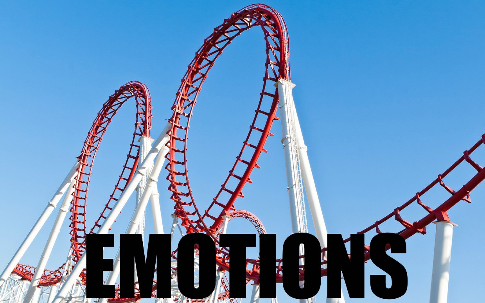

"Bipolar disorder can be a great teacher. It's a challenge, but it can set you up to be able to do almost anything else in your life."~Carrie Fisher


Bipolar Disorder: BPD
Understanding Bipolar Disorder
Bipolar disorder is a mental illness characterized by episodes of highs and lows. During manic phases,
people have an increased energy, less need for sleep, and sometimes delusions; people might feel as though they
have superpowers, or can fly. During this phase of the disorder, people can engage in reckless behavior, such as
spending too much money, sexual promiscuity, and substance abuse. These type of behavior can result in ruining
lives and destroying relationships.The other part of the illness involves depression; days, weeks, even months of
feeling sad, anxious and empty. In some cases, people possess suicidal thoughts.
What are the Symptoms of BPD?
- Mood:
mood swings, sadness, elevated mood, anger, anxiety, apathy, apprehension, euphoria, general discontent, guilt, hopelessness, loss of interest, or loss of interest or pleasure in activities
- Behavioral:
irritability, disorganized behavior, aggression, agitation, crying, excess desire for sex, hyperactivity, impulsivity, restlessness, or self-harm
- Cognitive:
unwanted thoughts, delusion, lack of concentration, racing thoughts, or slowness in activity
- Psychological:
depression, manic episode, agitated depression, or paranoia
- Sleep:
difficulty falling asleep, and exhibiting different forms of insomnia or excess sleepiness
- Weight:
rapid weight gain or weight loss
- Also common:
risky behavior, false belief of superiority, fatigue, or rapid and frenzied speaking
Are There Different Types of BPD?
There are four different branches of Bipolar Disorder, and can all bring forward a multitude of other different mental health issues
like anxiety, depression or even suicidal thoughts. BPD can also be passed down through your ancestry, so if anyone in your font-family
has exhibited signs of Bipolar Disorder, it's important that you go get tested.
Different Branches of BPD

- Bipolar I Disorder:
defined by manic episodes that last at least 7 days, or by manic symptoms that are so severe that the person needs immediate hospital care. Usually, depressive episodes occur as well, typically lasting at least 2 weeks. Episodes of depression with mixed features (having depression and manic symptoms at the same time) are also possible.
- Bipolar II Disorder:
defined by a pattern of depressive episodes and hypomanic episodes, but not the full-blown manic episodes described above.
- Cyclothymic Disorder:
(also called cyclothymia)— defined by numerous periods of hypomanic symptoms as well numerous periods of depressive symptoms lasting for at least 2 years (1 year in children and adolescents). However, the symptoms do not meet the diagnostic requirements for a hypomanic episode and a depressive episode.
- Other:
Specified and Unspecified Bipolar and Related Disorders— defined by bipolar disorder symptoms that do not match the three categories listed above.
How to cope with Bipolar Disorder?
- Control Stress:
Stress is a major bipolar trigger. Do what you can to limit stress in your everyday life, whether that include meditation or going regularly to see a therapist
- Keep a regular schedule:
Sticking to a routine can help control mood swings!
- Practice healthy sleep habits:
In some people, being sleep deprived can trigger mania. Relax before bed by listening to soothing music, reading a book, or taking a warm bath. Try to avoid electronics before heading to bed, as it can stimulate your mind and make it harder to sleep. Make your room calm place reserved for peace, quiet and sleep.
- Get moving:
Studies show that exercise can help improve mood.
- Write it down:
Keep a journal that tracks big events, stressors, amount of sleep you’re getting and what you eat and drink. Eventually, this can help know what your triggers are, and you can prepare accordingly for times when you might be most vulnerable for mood swings.
- AVOID:
caffeine, alcohol and drugs - Caffeine is a stimulant, which can keep you up at night and exacerbate manic episodes. Alcohol and drugs can negatively affect medications, and possibly trigger a mood episode.
At the end of the day, these strategies likely will not help to cure bipolar disorder. It is important to find out what triggers your episodes, in order to effectively modify your lifestyle to manage it better.
How to help someone with BPD?
| DO'S |
Don'ts |
| DO NORMAL ACTIVITIES! It is important that your loved one feel as normal as possible. Positive distractions are recommended. |
Don't go along for the ride. If your loved one is acting reckless, do not encourage them by going along with it.
It isn't "keeping them safe" while they are reckless, it's just dangerous overall.
|
| Give structure to your day. Is is important that you help your loved one plan out their day, as it will help them feel like they have fulfilled a goal at the end of the day. |
Do not baby them! They should be able to make mistakes and get back up and if you baby them, they will never know how to get back up without you
|
| Maintain boundaries! Your privacy is just as important as theirs, and don’t feel the need to give your loved one everything they want. Treat them as you would anyone else. |
Do not give in to abusiveness and threats! You are human too and it is important for you to stay strong during your loved one's lows.
|
| Be patient! BPD is a long strenuous illness, but it is manageable! Just give it time. |
Do not get defensive! This will make their BPD act up even worse. |
| Help your loved one seek help and be a good listener. Offer them different methods of coping with their pain, while not pressuring them into anything they might not want to do. |
Don't give dry help like "it's okay" or "it will be okay". It doesn't feel like that to your loved one and it is important that you acknowledge their pain. |
| Manage your own stress! Is is just as important for you to be stable, as it is for your loved one to be stable. |
Do not blame your loved one for your stress! This will add to their negative mindset. Take some time to yourself if you need to ever cool off. |
CITATIONS
- https://bpdfamily.com/message_board/index.php?topic=62266.0
- https://www.psychologytoday.com/blog/brain-and-behavior/201609/understanding-bipolar-disorder
- https://www.nimh.nih.gov/health/topics/bipolar-disorder/index.shtml
- http://www.mayoclinic.org/diseases-conditions/bipolar-disorder/home/ovc-20307967?utm_source=Google&utm_medium=abstract&utm_content=Bipolar-disorder&utm_campaign=Knowledge-panel
- https://www.everydayhealth.com/bipolar-disorder/bipolar-disorder-mood-swings.aspx